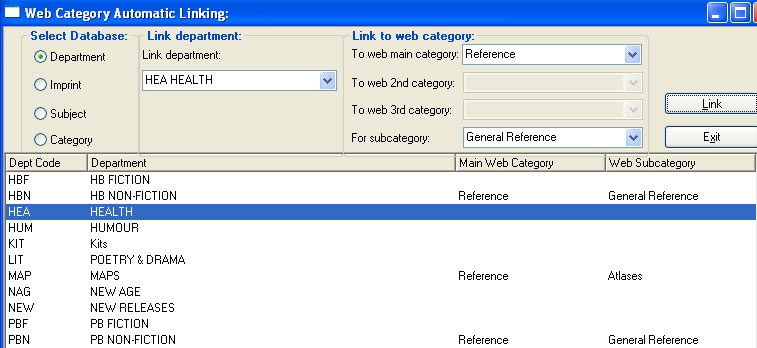

|
Web Category Mapping
|
Previous Top Next |

| · | Select it in the browser or combo box.
|
| · | Select the main category in the Main Category combo box. This will load that main category's sub-categories in the Sub-category combo box.
|
| · | Select the sub-category.
|
| · | Click the Link button.
|